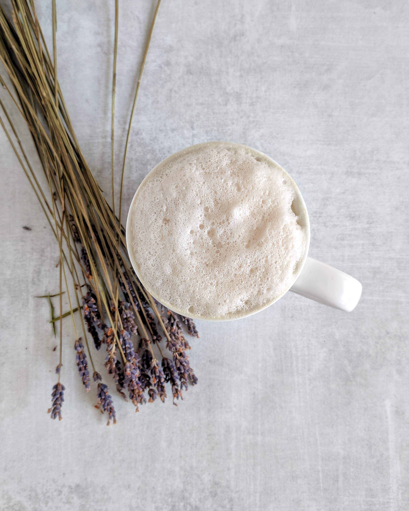
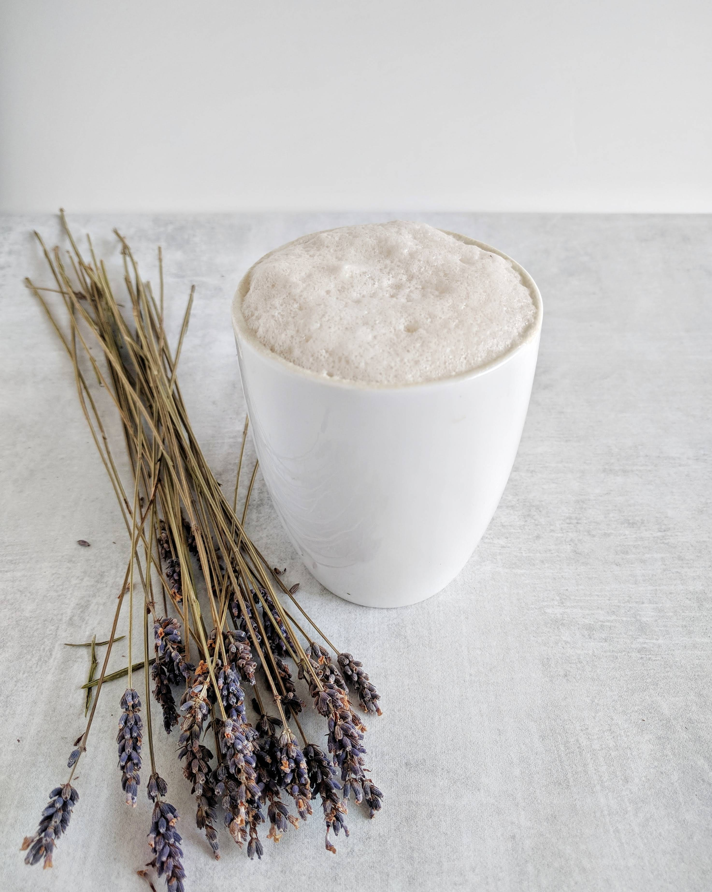

When we think of foamy lattes, we usually think of drinking them in the morning or in the afternoon for
a pick me up. However, you could even have a latte in the evening to wind down and relax. This "latte" recipe
doesn't have coffee as an ingredient.
The aroma and taste of these herbs usually help me relax after a busy day where I know I'll be in need of a deep
sleep. It also tastes amazing. Don't take my word for it though, try it and let me know what you think! I used three
herbs that are known to help promote relaxation and a good night sleep: lavender, chamomile, and valerian root. Each
one has a different floral flavor that when combined makes a truly unique blend. Mixing this brew with some foamy
non-dairy milk, and a little sweetener will make this latte extra special. Drink about 1 to 2 hours before bed to
ensure you don't have to wake up in the middle of the night!
Ingredients
- 1/2 tbsp of dried lavender flowers
- 1/2 tbsp of dried chamomile flowers
- 1 tsp of dried valerian root
- 1/2 cup of water (to be boiled)
- 3/4 cup of plain non-dairy milk (soy or almond go really well here)
- 1 or 2 tsp of raw honey (sub in 1/2 tbsp of raw coconut sugar if you don't want honey)
Instructions
- Bring water to a boil in a small pot. Remove from heat and let all dried herbs steep for 5 to 10 minutes
- In a separate pot, gently heat nondairy milk until foam starts to appear. Do not boil. Remove from heat.
- Strain the liquid from the steeped herbal tea and combine with milk and sweetener of choice.
- Optional: Before serving blend in a high-speed blender on a medium-low setting letting the steam escape. This will ensure extra thick foam if you're in the mood for something extra special. Pour into your favorite mug and enjoy!

Image courtesy of @shukieats.